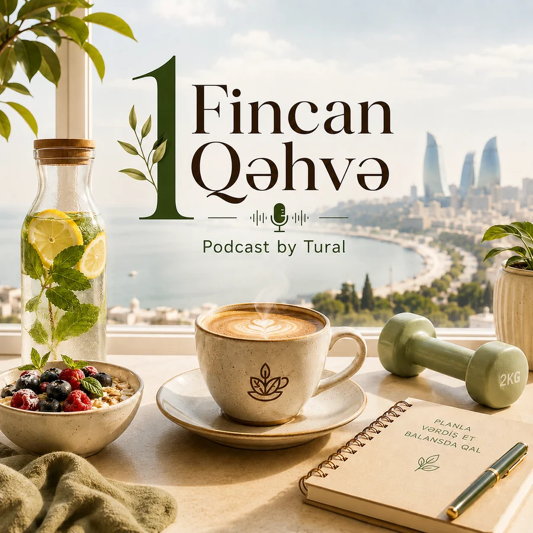

Podcast by Tural daxilində sağlam həyat seriyası
1 Fincan Qəhvə
Sağlam həyat, qidalanma, hərəkət, yuxu, enerji və çəki idarəetməsi haqqında praktik söhbətlər. Məqsəd sağlamlığı mürəkkəb göstərmək yox, gündəlik həyatda daha aydın və davamlı seçimlər etməyə kömək etməkdir.
Nə üçün bu seriya?
Sağlam həyat yalnız pəhriz siyahısı deyil.
Bir insanın necə qidalandığı, yatdığı, hərəkət etdiyi və öz bədəni haqqında necə düşündüyü bir-birindən ayrı mövzular deyil. 1 Fincan Qəhvə həmin bütöv mənzərəni sadə, praktik və real həyata uyğun formada danışır.
Burada əsas məqsəd hər mövzuya gündəlik həyat prizmasından baxmaqdır: nəyi dəyişmək olar, nəyi şişirtməyə dəyməz və hansı seçim uzun müddətdə daha real nəticə verir.

Nədən başlamaq istəyirsən?
Epizodu mövzudan yox, ehtiyacından seç.
Bu hissə yeni dinləyicinin uzun arxivdə itirmədən özünə uyğun başlanğıc tapması üçündür.
Mövzunu seç
1 Fincan Qəhvə arxivi altı istiqamətdə.
Hər buraxılış bir əsas kateqoriyaya və bir neçə kiçik taga bağlanır. Beləliklə, mövzular sadəcə siyahı kimi yox, istifadə olunan kitabxana kimi işləyir.
Buradan başla
Seriyanı tanımaq üçün ən yaxşı giriş epizodları.
“Məqsəd mükəmməl qidalanmaq deyil. Məqsəd uzun müddət davam etdirə biləcəyin düzgün sistemi qurmaqdır.”
Bu seriyanın tonu budur: başa düşülən prinsiplər, real həyat üçün davamlı seçimlər və mövzulara sakit, praktik yanaşma.